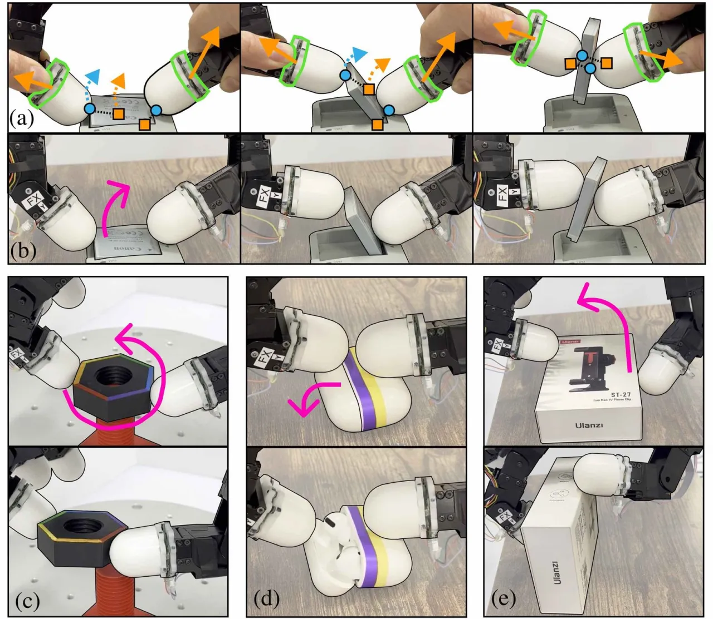
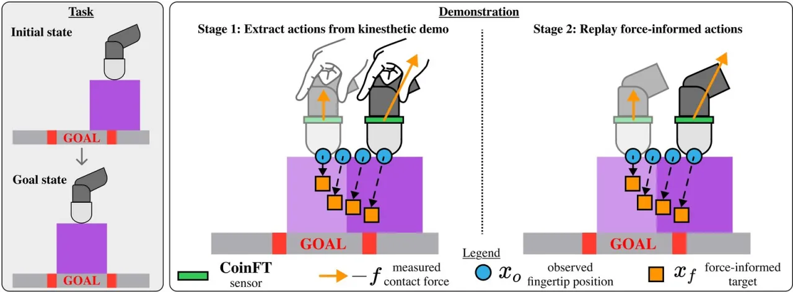
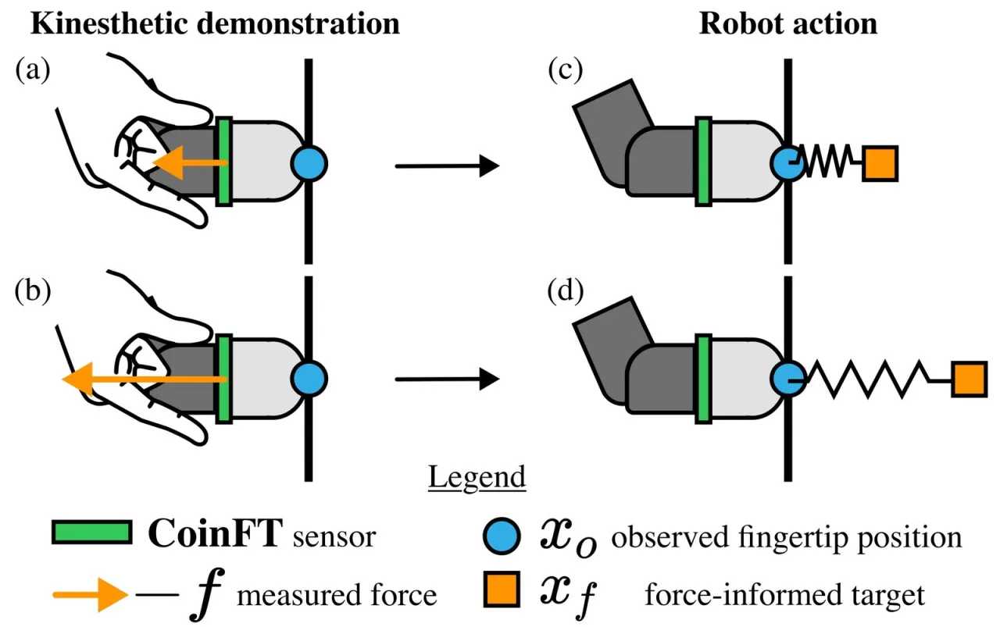
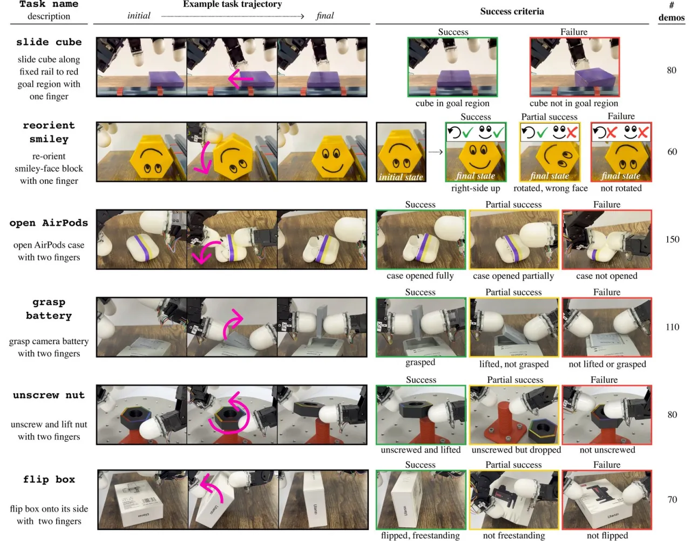
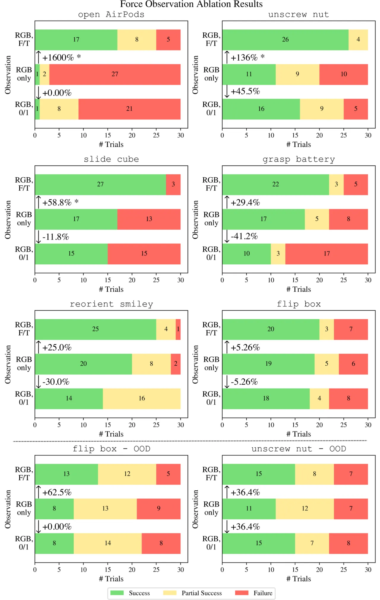
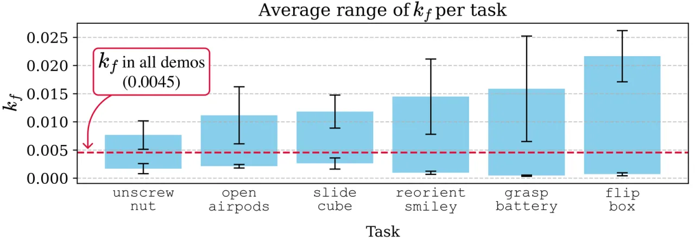

接触密集的灵巧操作，成败取决于「在正确的时刻、正确的位置施加正确的力」。DexForce 在力触觉演示（kinesthetic demonstration）中直接测量指尖接触力，用一个弹簧刚度模型把「观测到的动作」修正为能复现这些力的「力感知动作（force-informed actions）」，再用它们训练视觉扩散策略。六个任务平均成功率 76%；而直接用不含力的动作训练，成功率几乎为零。
模仿学习需要高质量的「状态-动作对」演示。对于接触密集的灵巧任务，这些动作必须能产生正确的力。但现有采集方式（遥操作 / 手部重定向）在接触密集任务上很难用：人到机器人的运动重定向不直观，而且操作者缺乏直接的力触觉反馈，无法判断施加的力是否合适。
“For contact-rich dexterous manipulation tasks that require dexterity, the actions in these state-action pairs must produce the right forces.” —— 演示里的动作不仅要「到位」，更要「用对力」。
DexForce 换了个思路：用力触觉演示（操作者亲手引导机器人手运动）——这种方式天然让人能感知到接触。但直接记录下的运动只是「达到某个位置」的轨迹，并没有编码「为达到该位置需要施加多少力」。DexForce 的贡献就是把这份被测量到的力，还原成机器人自己能复现的动作。

DexForce 是一套「演示采集」流程，核心是把「观测动作」变成「力感知动作」。它建立在阻抗控制器的弹簧模型之上：控制律第一项把「力—位移」建模为弹簧，在准静态（quasi-static）假设下，同一个弹簧模型可以反过来，由观测位置和接触力算出能复现该力的目标位置。

给定某个观测指尖位置 xo 以及该手指施加在物体上的接触力 f，力感知目标为：
其中 kf 是一个手工调节的标量刚度参数。直觉上：要让阻抗控制器真的「压」出力 f，就得把目标位置往施力方向多偏移一点（overshoot），偏移量正比于所需的力。论文对所有任务统一取 kf = 0.0045，调法是使回放能成功复现原始力触觉演示。

① 力触觉演示：操作者手动引导机器人手完成任务，记录指尖位置与两指的 6 轴力/力矩；用上式算出力感知目标序列。② 开环回放采集：用阻抗控制器跟踪这些力感知目标，机器人独立复现整段运动，并用腕部相机采集图像观测。回放得到的「新观测位置 + 图像」构成干净的机器人演示数据集，用于训练策略。
硬件：一只 Allegro Hand，腕部装 RealSense 相机（加鱼眼镜头扩大视野），拇指与食指根部各装一枚 CoinFT 硬币大小的电容式 6 轴力/力矩传感器。策略：对所有任务训练基于 CNN 的 Diffusion Policy，用 ResNet18 编码 RGB 图像；观测 horizon = 2，动作预测 horizon = 16，执行 horizon = 8，训练 1000 epochs；演示以 30Hz 记录、降采样到 10Hz。每个任务在相同的 30 个随机初始物体配置上评估。

核心对照实验：同样的力触觉演示，一组用 DexForce 的力感知动作，另一组直接用不考虑接触力的观测动作训练策略。
“policies trained on our force-informed actions achieve an average success rate of 76% across all tasks. In contrast, policies trained directly on actions that do not account for contact forces have near-zero success rates.”
第二组实验消融的是策略观测中是否包含力信息（注意与上面「动作」的消融区分），三种设置：RGB, F/T（RGB + 原始 6 轴力/力矩向量）、RGB, 0/1（RGB + 二值接触信号，力幅超过 0.55N 记为 1）、RGB only（仅图像）。结论是：加入力观测从不损害性能，且对越需要精度与协调的任务帮助越大。

| 任务（力观测帮助最大者） | RGB, F/T 相对 RGB-only 的成功率提升 |
|---|---|
| open AirPods | +1600% |
| unscrew nut | +136% |
| slide cube | +58.8% |
论文分析：open AirPods、unscrew nut、slide cube 这三类任务在 RGB-only 下更易失败，因为机器人无法施加满足所需精度与协调度的力——例如 open AirPods 时 RGB-only 策略常把盖子往错误方向压得过重，导致盖子纹丝不动。

OOD 场景：unscrew nut 训练时螺母初始旋转在 0°–360°，OOD 测试推到 360°–900°；flip box 的 OOD 是箱子加重 100g。这两项均包含在力观测消融的底行评估中。
“a human operator can comfortably collect kinesthetic demonstrations with up to two robot fingers” —— 因此论文只考虑单指「外在灵巧」与两指任务，尚未覆盖需要多指全手协同的更复杂灵巧操作。
力感知修正用一个全局标量 kf=0.0045。虽然刚度扫描显示各任务有重叠可行区间，但该值需针对硬件/任务手工调；对力更敏感的任务容许区间更窄，暗示换硬件或更极端任务时可能需要重新标定。
方法建立在人工力触觉演示 + 阻抗控制器开环回放之上，每任务演示量有限（约 10–20 段量级）。相比遥操作大规模采集，该流程更依赖人工逐段引导与回放，扩展到大规模数据集的成本较高。